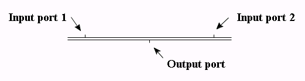

The parallel join is used to merge the execution of two parallel branches.
The input ports of a parallel join are considered as input ports of transitions. The output port of a parallel join is considered as an output port of a step. When the precing steps, i.e. the steps connected to the input ports, are active the transition connected to the output port is enabled. The preceding steps are deactivated when the transition fires.
Hint: Parellel joins can be connected to each other to merge more than two paths.
N/A
None